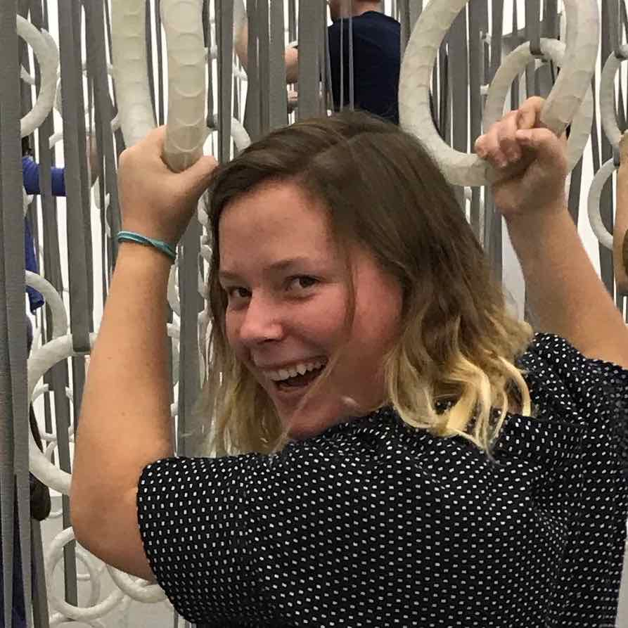
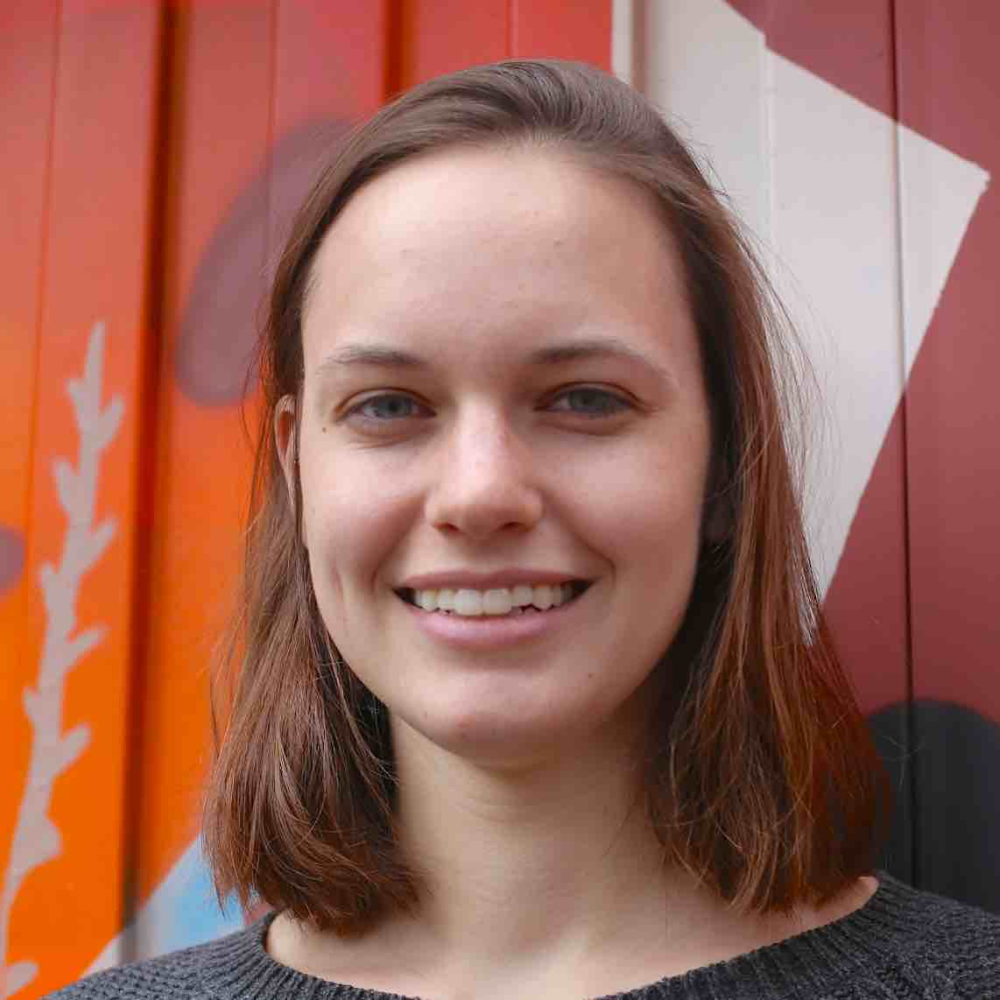

Aaron Greiner
aaron@theculturehouse.org
(978) 968-7828
Aaron is an artist, designer, and engineer from Gloucester, Massachusetts. He graduated from Olin College of Engineering where he studied Design Engineering. He's spent the last few years exploring cities, urban design, and livability.

Allie Girouard
allie@theculturehouse.org
Allie is an aspiring community organizer from Reading, Massachusetts. She is a student at Connecticut College studying sociology and public policy. She has worked with a number of non-profits and political campaigns in the Boston area and is currently studying the ways urban design can be used to promote social justice.

Izzy Harrison
izzy@theculturehouse.org
Izzy is a soon to be graduated designer and engineer from Olin College of Engineering. She is inspired by tactical urbanism and likes to build things. Future TBD

Linnea Laux
linnea@theculturehouse.org
Linnea is an Environmental Engineering student at Olin College of Engineering. She is fascinated by built environments, the human relationship with the natural world, and the complex challenges presented by climate change. She plans to pursue a master's degree in Landscape Architecture.

Alisha Pegan
Alisha is a sustainable designer and data enthusiastic, and a recent graduate from Wellesley College and Olin College. Woo woot! She is currently working at the City of Boston as a Community Outreach Fellow for the Environment Department.

Gwendolyn Sands
Gwendolyn is an aspiring architect and urban designer from Burlington, Vermont. She is recent graduate of Wellesley College where she studied Architecture and Women and Gender studies. She spent her last year at Wellesley exploring how spaces have the power to foster community.